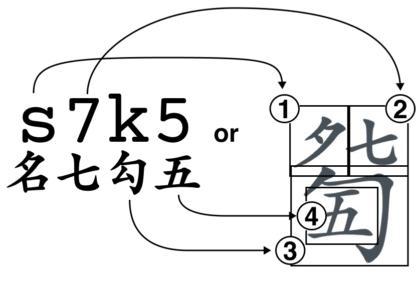
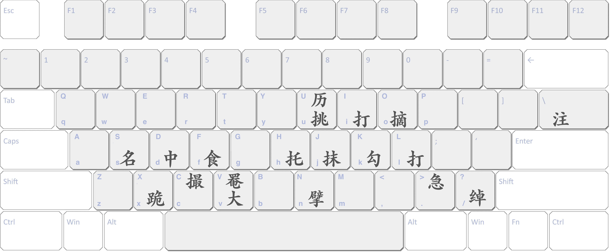

JianZiPu Font

s7ju5 s7>k5 0k3 k3 v56V5 s9c C03|s65 v7U43 v85banlun7 :shang,5,1 #jin
名七抹挑五 名七急勾五 散勾三 勾三 大五六掩五 名九掐起 撮散三|名六五 大七历四三 大八五半轮七 ：上五一 #进
名七抹挑五 名七急勾五 散勾三 勾三 大五六掩五 名九掐起 撮散三|名六五 大七历四三 大八五半轮七 ：上五一 #进
[[[s7ju5 s7>k5 0k3 k3 v56V5 s9c C03|s65 v7U43 v85banlun7 :shang,5,1 #jin]]]
Try it

| key | 中文 | 拼音 |
|---|---|---|
| s | 名 | míng |
| d | 中 | zhōng |
| f | 食 | shí |
| v | 大 | dà |
| x | 跪 | guì |
| key | 中文 | 拼音 |
|---|---|---|
| V | 掩 | yǎn |
| c | 掐起 | qiā qǐ |
| key | 中文 | 拼音 |
|---|---|---|
| / | 绰 | chaō |
| > | 急 | jí |
| \ | |注 | zhù |
| key | 中文 | 拼音 |
|---|---|---|
| n | 擘 | bō |
| h | 托 | tuō |
| j | 抹 | mǒ |
| u | 挑 | tiāo |
| k | 勾 | gōu |
| i | 剔 | tī |
| l | 打 | dǎ |
| o | 摘 | zhāi |
| ju | 抹挑 | mǒ tiāo |
| ki | 勾剔 | gōu tī |
| lo | 打摘 | dǎ zhāi |
| key | 中文 | 拼音 |
|---|---|---|
| C | 撮 | cuō |
| U | 历 | lì |
| lun | 轮 | lún |
| banlun | 半轮 | bàn lún |
Preface with #
| key | 中文 | 拼音 | output |
|---|---|---|---|
| #lun, #轮 | 轮 | lún | [[[#轮]]] |
| #tui, #退 | 退 | tuì | [[[#退]]] |
| #jin, #进 | 进 | jìn | [[[#进]]] |
| #fanqi, #泛起 | 泛起 | fàn qǐ | [[[#fanqi]]] |
| #fanzhi, #泛止 | 泛止 | fàn zhǐ | [[[#fanzhi]]] |
| #fenkai, #分开 | 分开 | fēnkāi | [[[#fenkai]]] |
| #yin, #吟 | 吟 | yín | [[[#yin]]] |
| #nao, #猱 | 猱 | náo | [[[#nao]]] |
| #xiaoyin, #小吟 | 小吟 | xiǎo yín | [[[#xiaoyin]]] |
| #fu, #復 | 復 | fù | [[[#fu]]] |
| #zhuang, #撞 | 撞 | zhuàng | [[[#zhuang]]] |
Preface with : and split characters with , or each character/letter will be split in its own line. Characters are limited to the following: 1-10 (一到十), shang (上), xia (下).
| key | output |
|---|---|
| :shang,10 :xia,5,6 | [[[:shang,10 :xia,5,6]]] |
| ：下十一 | [[[：上十一]]] |
| :下65 | [[[:下65]]] |
Components: 反撮, 大撮, 大反撮, 三弹, 双弹, 泼刺, 泼, 刺, 滚沸, 滚, 沸, 到
Standalone Characters: 復, 撞, 长吟, 细吟, 定吟, 大息, 少息, 泛, 止, 起, 带起, 对起, 爪起, 撇起, 打圆, 散, 如, 外, 应合
Contact me if you want more characters or glyphs added to the font, or if you want to collaborate.
Code open source on https://github.com/neuralfirings/JianZiPu (v2 is not yet pushed).